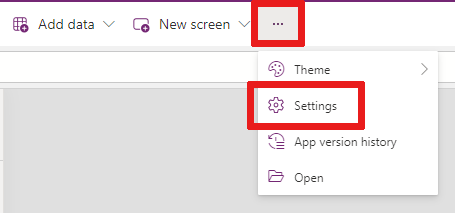
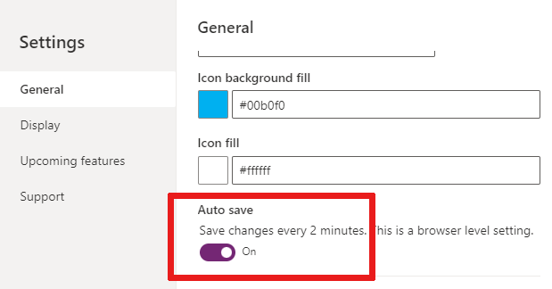
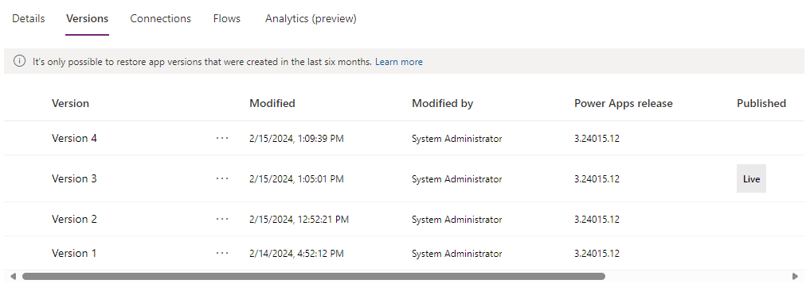

Deploy de aplicativos Power Apps
No desenvolvimento de soluções no Power Apps, sempre que as alterações em um aplicativo de tela forem salvas, elas serão publicadas automaticamente apenas para você e qualquer outra pessoa que tenha permissões para editar o aplicativo. Ao terminar as alterações, você precisa publicá-las explicitamente a fim de disponibilizá-las para todas as pessoas com as quais compartilha o aplicativo.
Salvando seu aplicativo
Selecione Salvar para salvar as alterações não salvas feitas no aplicativo. A cada salvamento, uma nova versão será criada no Histórico de versões do aplicativo.
Ativar ou desativar o Salvamento Automático
Selecione Mais ... > Configurações.

Selecione a guia Geral -> Na seção Salvamento automático, defina o botão de alternância Salvamento automático como Ativado ou Desativado.

Identificar a versão ao vivo
Para ver todas as versões de um aplicativo:
- Acesse Power Apps > Aplicativos.
- Selecione o ao lado de um nome de aplicativo.
- Selecione Detalhes e, em seguida, selecione a guia Versões.
A versão Ao vivo é publicada para todas as pessoas com quem o aplicativo é compartilhado. A versão mais recente de qualquer aplicativo estará disponível somente para usuários que têm permissões para editá-lo.
